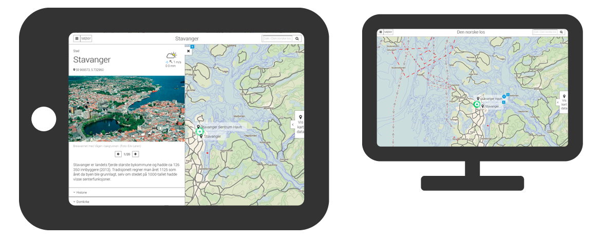

{{> header}}

<div class="article-wrapper">

    <h5 class="case">Case</h5>

    <h1>The Norwegian Mapping Authority</h1>

    <h2>iPad app and web solution for transferring an 8 volume maritime pilot reference encyclopedia from its original paper version to a digital application</h2>

    <div class="article-image">
        <div class="article-image-element">
            
              <div class="article-image-overlay">
              <!--    <h2><span class="highlight">Wireframes for the new TV platform</span></h2>-->
              </div>
        </div>
    </div>


    <div class="article-text">

        <p>"The Maritime Pilot" was a pilot project where the aim was to build a web site and and iOS app for maritime pilots, with offline support.
          The content was to be based on a large maritime encyclopedia called "The Norwegian Maritime Pilot" (Den norske los).
          The main objective was to provide captains and professional navigators with an interactive map of the entire
          Norwegian coast, covering thousands of points of interest, each POI having a supporting article previously covered in the books.


        </br></br>My tasks were user story mapping, content strategy, user experience design, wireframing, prototyping, end user review workshop,
        focus group workshop, backlog break down structure and test cases. 
      </p>

    </div>

</div>


{{> footer}}
